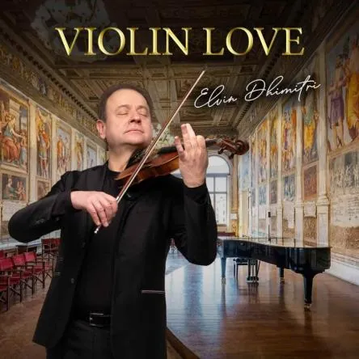

ven 13 nov
“Violin Love” - Padova
Sala dei Giganti di Palazzo Liviano - Piazza Capitaniato, 5 - Padova
 Indicazioni
Indicazioni
- Costi e prenotazioni
- Costo non indicato · Prenotazione non indicata
- Programma
- Programma da verificare. Apri la fonte ufficiale per orari e possibili aggiornamenti.
- In caso di maltempo
- Nessuna indicazione specifica pubblicata.
- Note
- Acquisito automaticamente dalla fonte.
L’EVENTO
Descrizione completa
Sede: Sala dei Giganti di Palazzo Liviano - Piazza Capitaniato, 5 - Padova
Inizio concerto ore 20:30. Fine ore 22:00
“Violin Love” arriva a Padova per una serata dedicata ai brani più romantici e struggenti di sempre. Dopo il sold out e il grande successo registrato nel 2025 con l’esecuzione de “Le Quattro Stagioni”, il Maestro Elvin Dhimitri torna protagonista nella prestigiosa Sala dei Giganti di Palazzo Liviano, la magnifica sala padovana cornice di questo atteso appuntamento.
SALA DEI GIGANTI DI PALAZZO LIVIANO
La Sala dei Giganti è una delle sedi più prestigiose di Padova, celebre per il suo imponente ciclo di affreschi del XVI secolo che raffigura gli uomini illustri dell’antichità, come modelli di virtù e saggezza del passato. Lo spazio, cuore della cultura umanista cittadina, è stato scelto per la sua eccezionale acustica naturale e per l’eleganza architettonica, elementi che esaltano le sfumature dinamiche dell’ensemble. In questo contesto, il programma di “Violin Love” trova la sua dimensione ideale, unendo la musica di alta qualità a un patrimonio artistico di inestimabile valore.
Protagonista della serata è il violino solista e direttore Elvin Dhimitri, primo violino di Opera e Lirica e interprete di riferimento sulla scena contemporanea. Già primo violino dell’Orchestra Filarmonica di Roma, Dhimitri ha collaborato con istituzioni come la Filarmonica Toscanini di Parma e la Nuova Scarlatti di Napoli. Noto per una tecnica impeccabile e una forte carica comunicativa, l’artista cura personalmente gli arrangiamenti originali del programma, doti che gli hanno permesso di registrare il tutto esaurito nelle principali sale da concerto europee.
Il repertorio di “Violin Love” attraversa il sentimento in tutte le sue sfumature: dal lirismo classico di Beethoven alla passione di Astor Piazzolla, fino alla nostalgia delle grandi colonne sonore firmate da Ennio Morricone e John Williams. Non mancherà l’Inverno di Vivaldi, il cavallo di battaglia di Elvin Dhimitri.
JOHANN SEBASTIAN BACH Aria dalla III suite
ANTONIO VIVALDI Largo dall'Inverno
LUDWIG VAN BEETHOVEN Romanza
EDWARD ELGAR Salut d'Amour
FRITZ KREISLER Liebesleid
GIUSEPPE VERDI Preludio del III atto della Traviata
JOHANNES BRAHMS Danza Ungherese n. 5
DMITRI SHOSTAKOVICH Waltz n. 2
JOHN WILLIAMS Schindler's List
GEORGE GERSHWIN Summer Time
ENNIO MORRICONE Nuovo Cinema Paradiso
ASTOR PIAZZOLLA Libertango
ASTOR PIAZZOLLA Ave Maria
Arrangiamenti originali di Elvin Dhimitri
VIOLINO SOLISTA: Elvin Dhimitri
Quintetto d'archi e pianoforte
Informazioni logistiche e biglietteria:
Data e ora: 13 Novembre 2026, ore 20:30.
Durata prevista: 90 minuti circa.
Biglietti: € 50,00 (Exclusive prima e seconda fila), € 35,00 (Categoria A), € 30,00 (Categoria A ridotto), € 20,00 (Panche).
I titoli d'ingresso sono acquistabili sul sito ufficiale dell'organizzazione o presso i canali di vendita autorizzati.
Sito web: https://www.opera-lirica.com/it/115-violin-love.html
Email: info@operaelirica.com
IL PROGRAMMA
Programma e orari
Appuntamenti raccolti dalle fonti elencate. Dove manca un orario, non è ancora disponibile in questa scheda.
Programma pubblicato
- Dal 2026-11-13 al 2026-11-13
INFORMAZIONI UTILI
Prima di partire
- Controllare la fonte prima di partire.
ORGANIZZAZIONE